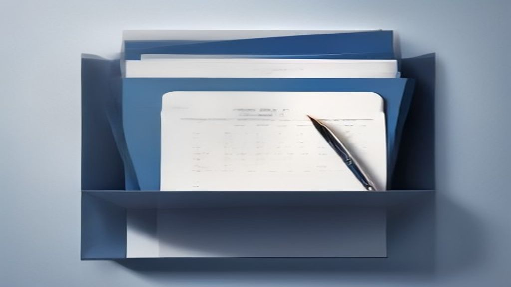

Latest insights
Personal-finance explainers, market briefs, F&O positioning and business stories — all in one place.
Optimise NPS for Higher Returns & a Bigger Retirement Corpus
The National Pension System (NPS) offers a low-cost, market-linked avenue for retirement planning. Optimising your asset allocation, especially increasing equ.
Apple as a Diversification Play Amidst AI Spending Concerns
Many US tech giants are investing heavily in AI, leading to significant capital expenditure and potential risks for investors. Apple, in contrast, has maintai.
Your Local Products Can Now Reach the World Easier: New Export Rules for Online Sellers
The government has changed rules to make it simpler for Indian e-commerce businesses to export goods made in India. This new rule specifically allows online s.
SEBI's New ETF Pricing Rules: What Investors Need to Know
SEBI has introduced new rules for Exchange Traded Funds (ETFs) that will come into effect from September 7, 2026. The changes primarily impact how ETF base pr.
PFRDA's PoP Changes: What NPS Subscribers Need to Know
The PFRDA is proposing significant changes to the regulations governing Points of Presence (PoPs) for the National Pension System (NPS). These changes aim to .
Market Wrap — 04 September 2026
Indian equities witnessed a mixed session, with the Nifty 50 closing marginally higher, while the Bank Nifty remained largely flat. Global cues, particularly .
Pre-Market Brief — 04 September 2026
Global markets show a mixed to positive bias, with Asian and European indices mostly higher, but US Fed rate cut expectations tempering sentiment. GIFT Nifty .
Snowflake Q2 Earnings Analysis: Why SNOW Stock Jumped
Snowflake reported stellar Q2 FY2027 results, significantly beating analyst expectations for both revenue and earnings. Product revenue soared 37% year-over-y.
India F&O Pulse — 04 Sep 2026: what the day's options & futures positioning is whispering
End-of-day reading of India's F&O open interest, PCR, max pain and FII positioning — explained simply.
India's Foreign Exchange Reserves Hit a New High: What It Means for You
India's foreign exchange (forex) reserves recently reached a record high of over $729 billion. These reserves are like a country's emergency savings, held in .
Gold's Resilience: Geopolitics, Inflation, and Your Portfolio
Gold prices recently maintained their gains despite easing inflation concerns stemming from geopolitical developments. US President Donald Trump's statements .
SIF Minimum Investment Rule: How the ₹10 Lakh Threshold is Calculated
Specified Investment Funds (SIFs) require a minimum investment of ₹10 lakhs per investor. This ₹10 lakh threshold is calculated at the investor's Permanent Ac.
Market Wrap — 03 September 2026
Indian benchmark indices saw a mixed closing today, with the Nifty 50 ending marginally lower while Bank Nifty posted gains. Broader markets, represented by M.
Pre-Market Brief — 03 September 2026
Global markets presented a mixed picture, with US indices closing higher while Asian markets traded with a slight negative bias this morning. GIFT Nifty is si.
Broadcom's Q3 FY2026 Results: A Deep Dive for Indian Investors
Broadcom reported strong Q3 FY2026 results, surpassing revenue and adjusted EPS expectations. Revenue reached $29.6 billion, exceeding estimates, driven signi.
India F&O Pulse — 03 Sep 2026: what the day's options & futures positioning is whispering
End-of-day reading of India's F&O open interest, PCR, max pain and FII positioning — explained simply.
SEBI's Plan to Help Families Find Investments After You're Gone
Unclaimed investments in India are a significant and growing problem, with families often unaware of assets held by deceased relatives. SEBI is working on a c.

ITR Deadline: 31 October for Audited Accounts & Penalties
The Income Tax Return (ITR) filing deadline for Financial Year 2025-26 (Assessment Year 2026-27) is 31 October 2026 for certain categories of taxpayers. This .
Market Wrap — 02 September 2026
Indian equities concluded the day in negative territory, with both Nifty 50 and Bank Nifty registering declines. Global cues, including mixed US jobs data and.
Pre-Market Brief — 02 September 2026
Global markets closed mostly lower, with Asian peers also trading in the red this morning, signalling a cautious start. GIFT Nifty indicates a likely gap-down.
India F&O Pulse — 02 Sep 2026: what the day's options & futures positioning is whispering
End-of-day reading of India's F&O open interest, PCR, max pain and FII positioning — explained simply.
Don't Miss Your Advance Tax Deadline: What You Need to Know
Advance tax is income tax paid in installments throughout the financial year. If your estimated tax liability is ₹10,000 or more after accounting for TDS, you.
Market Wrap — 01 September 2026
Indian equities witnessed a negative close, with Nifty 50 and Bank Nifty ending in the red, largely influenced by global inflation concerns. Surging crude oil.
Pre-Market Brief — 01 September 2026
Global markets ended in the red overnight, with US indices down and Asian markets showing a mixed-to-negative start. GIFT Nifty indicates a slightly negative .
Small Caps vs. Large Caps: Unpacking Earnings Growth for Investors
While small-cap stocks often show higher earnings growth rates, this can be misleading due to a lower base. Large-cap companies typically exhibit more stable .
India F&O Pulse — 01 Sep 2026: what the day's options & futures positioning is whispering
End-of-day reading of India's F&O open interest, PCR, max pain and FII positioning — explained simply.
IPO Report Card: 30 to 60 Days After Listing — August 2026
Out of 28 IPOs that listed between 30 and 60 days ago, 19 are currently trading above their original IPO price. 9 IPOs are trading below their original issue .
Investing Your Retirement Corpus for Steady Income and Growth
Retirement planning requires a careful balance between generating regular income and ensuring your corpus grows to beat inflation. A diversified portfolio com.
Form 10-IEA: Why Business Taxpayers Can't Switch Regimes Annually
Taxpayers with income from a business or profession face restrictions on frequently switching between the old and new tax regimes. To opt for the new tax regi.
Market Wrap — 31 August 2026
The Nifty 50 closed marginally lower, while the Bank Nifty showed strong gains. Heavy selling pressure in Adani group stocks, triggered by MSCI index rebalanc.

Pre-Market Brief — 31 August 2026
Global markets presented a mixed picture, with US indices closing lower and Asian markets showing varied performance. GIFT Nifty is signalling a slightly nega.
Adani Enterprises: Rich valuations and holding-company discount risk may cap gains
Adani Enterprises' current market valuations are considered rich, with brokerage targets already factoring in steep premiums for its new businesses. The compa.
Upcoming IPOs, Explained Simply — August 2026
This week sees several Initial Public Offerings (IPOs) open, including Lumino Industries, Priority Jewels, ESDS Software, and Purple Style Labs. Forthcoming I.
India F&O Pulse — 31 Aug 2026: what the day's options & futures positioning is whispering
End-of-day reading of India's F&O open interest, PCR, max pain and FII positioning — explained simply.
Your Big Stock Trades Just Got Bigger: Understanding Block Deals
Block deals are special, large share transactions done by big investors. They happen in separate, short trading windows on stock exchanges.
UPI Transaction Limits Explained: From ₹1 Lakh to ₹5 Lakh
The standard daily UPI transaction limit for most payments is ₹1 lakh per bank account. Certain specific categories, like payments to hospitals and educationa.
₹25,000 Monthly Savings: Balancing SIPs, Stocks, and FDs for Growth
Effectively investing ₹25,000 monthly requires a balanced approach considering your financial goals and risk tolerance. Systematic Investment Plans (SIPs) in .
Your Stock Market's Closing Bell: Why SEBI Says the New Rules Are Here to Stay
SEBI Chairman Tuhin Kanta Pandey recently confirmed that the new Closing Auction Session (CAS) for certain stocks is permanent. This system changes how the fi.
Nvidia's Stellar Earnings Fuel AI Stock and Taiwan Index Rally
Nvidia reported blockbuster quarterly results, with revenue more than doubling to $96.2 billion, significantly exceeding market expectations. The strong perfo.
India's Big Step in Making Computer Chips: What a New Factory Means
India is making a strong push to manufacture its own **semiconductor chips**, which are the 'brains' of all electronics. This involves huge investments from b.

Home Loan EMI Paid? Don't Forget These Crucial Documents
Once your home loan is fully repaid, collecting specific documents from your bank is a critical final step. The 'No Dues Certificate' and the original propert.

Gifting Mutual Funds to Siblings: A Practical Guide for Raksha Bandhan
Gifting mutual fund units to siblings is a thoughtful way to promote financial well-being. The process involves submitting a request to the AMC/RTA, often wit.
Market Wrap — 28 August 2026
The Indian benchmark Nifty 50 ended the day with modest gains, while Bank Nifty remained largely flat, reflecting a cautious yet resilient market. Global cues.
Pre-Market Brief — 28 August 2026
Global markets showed a mixed to slightly negative tone overnight, with US indices closing marginally lower and Asian markets trading mixed this morning. GIFT.

Hindustan Copper: Strong Metal Cycle, High Valuation Concerns
Hindustan Copper is currently benefiting significantly from a robust global copper price cycle and strong demand. The company's earnings growth is being aided.
India F&O Pulse — 28 Aug 2026: what the day's options & futures positioning is whispering
End-of-day reading of India's F&O open interest, PCR, max pain and FII positioning — explained simply.


Your Next Phone Could Be More 'Made in India': Government's New Manufacturing Push
The government has launched a new ₹62,500 crore scheme to boost mobile phone manufacturing in India. Called the Mobile Phone Manufacturing Scheme (MPMS), it o.